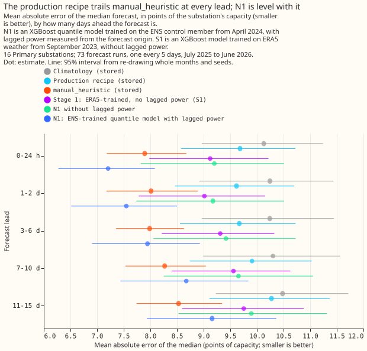
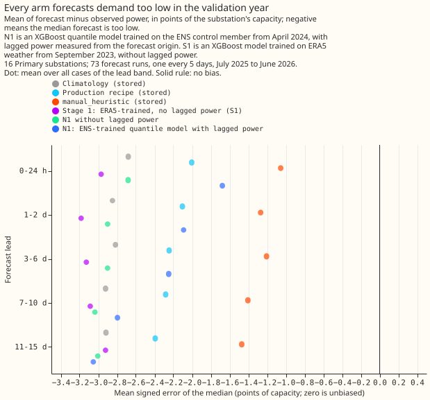

Where does Primary substation demand stand against the stored baselines?
We asked how well our best demand model forecasts Primary substations (substations that step power
down to the local distribution network) compared with a stored baseline that uses the power at the
same time in earlier weeks, and why the model now in production loses to that baseline. We scored an
upgraded model (N1, an XGBoost quantile model trained on ensemble weather forecasts, with recent
power as inputs), the production recipe (the stored xgboost_baseline), and the baseline on 16
Primary substations. The upgraded
model was level with the baseline, with an interval that includes zero, and the production recipe
lost to the baseline by 1.69 points of capacity.
Verdict: inconclusive. The upgraded XGBoost quantile model N1 does not beat manual_heuristic
with an interval that excludes zero. For the 16 Primary substations, N1's mean absolute error of the
median is 8.45 points of capacity over all leads against 8.23 for manual_heuristic: C1 is +0.22
(99% interval -0.54 to +0.97). Up to 48 hours N1 scores 7.38 against 7.95, which meets the planned
0.5-point size (-0.57) but not the interval (-1.33 to +0.27), and beyond 3 days N1 is level or worse
(+0.40, -0.39 to +1.19). The production recipe does lose to manual_heuristic, by +1.69 points (C3,
+0.98 to +2.59), at every lead and in 12 of 16 series. The hypothesis named a mechanism for that
loss, no usable power persistence at short leads, and the equal gap at every lead contradicts it.
The decision rule has no branch for this outcome, so the verdict and the gate action below are the
fall-through reading of the rule and were not pre-registered. The gate for P7 and P8 is not
passed, so P7 compares the staged chain with manual_heuristic as well as with N1. A point is 1% of
the series' effective capacity. The substations are not named. manual_heuristic is a stored
baseline that forecasts from the power at the same time of day in earlier weeks and years. The mean
absolute error of the median is the average gap between the median forecast and the measured power.


What the arms score
Every arm is scored on the same 768,073 cases per seed (Primary substations; 965,723 cases for all
20 series), on the 73 runs of fold_a_every5d_v1. Intervals resample whole months and the three
seeds; the stored baselines have no seed, so each is repeated three times.
| Arm | All leads | Up to 48 h | 3 days or more |
|---|---|---|---|
manual_heuristic |
8.23 | 7.95 | 8.31 |
| N1 | 8.45 | 7.38 | 8.71 |
| N1 without lagged power | 9.60 | 9.19 | 9.71 |
| Stage 1 trained on ERA5 (S1) | 9.48 | 9.07 | 9.59 |
| Production recipe | 9.92 | 9.65 | 10.02 |
climatology |
10.33 | 10.19 | 10.36 |
N1 is no better than manual_heuristic on the quantile score. The quantile score (an estimate of
the continuous ranked probability score) is 5.89 for manual_heuristic, 6.33 for N1 (C1 +0.44, -0.27
to +1.08), 9.52 for the production recipe, and 7.46 for climatology. For the two bulk supply points
N1 scores 11.3 against 12.3 for manual_heuristic, and for the two grid supply points 27.4 against
29.8, on the error of the median; two series per type resolve no interval.
Why the production recipe loses to manual_heuristic
The gap is the same size at every lead, so it does not come from missing persistence at short leads. C3 is between +1.60 and +1.79 in every lead band, and the production recipe is worse in all 12 months. Two hypotheses are consistent with the numbers; the experiment did not isolate either.
- A level offset. Every arm forecasts the validation year too low (figure 3). The mean error of
the median is -2.3 points for the production recipe and -1.3 for
manual_heuristic. The N1 arms trained on April 2024 to June 2025, andmanual_heuristicmay track the drift because it copies the last weeks of observed power. Post hoc, subtracting each arm's own per-series mean error (an oracle, since it uses the validation year) lowers the production recipe's error to 8.95 andmanual_heuristic's to 7.87, so the offset accounts for 0.6 of the 1.69 points. The offset is not specific to the production recipe:climatology(-2.9) and S1 (-3.1) are lower still. - No recent power. The remaining 1.1 points are of the size that lagged power recovers in N1 (C4, 1.15, -2.16 to -0.58), but C4 compares two N1 arms and not the production recipe. N1 without lagged power scores 9.60, 0.32 below the production recipe (E7, 95% interval -0.76 to +0.27), so the quantile loss, the 00006 columns, the recency weights, and training on ENS pooled over members lowered the error by an amount not distinguishable from zero.

Other findings
- N1 without lagged power does no better than S1 on the error of the median (C5 +0.12, -0.41 to +0.61), so training on ENS instead of ERA5 changes that error by less than the interval can show. On the quantile score N1 without lagged power is better (C5 -0.73, -1.14 to -0.31, 11 of 12 months). The planned clause that N1 without lags recovers half the production gap beyond 3 days fails: C5 is +0.13 against C3's +1.71.
- Pooling the 51 members helps slightly. N1 beats the control member alone by 0.05 points (E3, 95% interval -0.08 to -0.03).
- The calendar columns matter little. Removing hour, weekday, and days to Christmas raises the error by 0.17 (E4, +0.09 to +0.25) and does not change the quantile score (+0.01).
- N1 beats 00005's ENS-trained model with lags as inputs by 0.50 points (E5, -0.64 to -0.36), from lags measured at the origin instead of nullified at short leads.
Post hoc
The oracle level correction is post hoc. The plan pre-registered a decomposition of the production gap by bias; the oracle correction was added after the verdict, uses the validation year to estimate the offset, and changes no pre-registered contrast. A deployable version, a correction from the last 14 days of observed error, is a candidate for P8.
Limits
- The telemetry delay is assumed. Every N1 result is conditional on the newest usable value being 3.5 hours before the origin.
- N1 trained on 15 months, not from 2023-09, because the stored ENS archive starts on 2024-04-01. C5 mixes ENS against ERA5 training with the shorter window, and S1 trains on 2023-09 onward.
- 16 series and 12 months leave 99% intervals of about plus or minus 0.8 points, wider than the planned 0.5-point effect.
Plan, written before any code ran
Plan: sizing
- Stored data: prediction sets only, under
data/ml-experiments/; no production table changes. - Production serving path: not touched.
- Degradation rule: not touched.
- Defensible designs: more than one. N1's weather pooling, the telemetry delay, and the lag definitions are choices; each is fixed below before a fit.
- Callers: the scripts copy 00005's helpers and read its stored predictions, which the author of this plan could name without searching.
Size: complex. The plan gets two Sonnet reviews (Opus is kept for work that is truly vital), the code
gets two Sonnet reviews (leakage and the fit stopping at train_end; then correctness), and the
write-up gets one.
Plan: arms
All arms are scored on the 73 runs of fold_a_every5d_v1, on the rows every arm holds and an
observed power value, for valid times before 2026-07-01. Primary substations (16 series) are the
headline; BSP and GSP (2 series each) are reported separately and never averaged in.
- MH, CL, PROD (stored):
manual_heuristic,climatology, and the production recipe (xgboost_baseline, foldmid_2025_to_mid_2026) read from thepower_forecastsDelta table; the quantiles of each arm's members. They have no seed, so each is repeated once per seed. - S1 (00005's
r0_from2023): stage 1, ERA5-trained from 2023-09, no lags, pooled over the 51 members. R1 (r1) and R2 (r2) are reported as references. - N1: one XGBoost model per series with the 9-level quantile loss, trained on the ENS control member of every daily run from 2024-04-01 (the start of the stored ENS archive, so 2023-09 is not available to ENS-trained arms), valid times up to 2025-06-30 23:30. Columns: the 00006 Primary set (weather block, solar position, hour, weekday, COVID indicator, windowed days to Christmas), the lead in hours, and three lags measured from the forecast origin. Recency weights use a half-life of 2 years, anchored at 2025-06-30 (the last training valid time), not at each row's own date. The fit runs a fixed 500 rounds with no early stopping and no validation split. A training row is kept only when its valid time is on or before 2025-06-30 23:30, and every lag of a training row lies before that row's origin.
- Pooling. The 51 members' 9 quantiles each give 459 values with equal member weights and the 9-level atom masses; the forecast quantiles are the weighted quantiles of those values at the 9 levels, sorted so none cross. A model trained on the control member and applied to perturbed members adds its own spread to the ensemble's spread, so the bands may be too wide, which raises the quantile score. N1-control, N1 applied to the control member alone, checks this (exploratory).
- N1-nolag: N1 without the lag columns (isolates the lags, and ENS-trained against ERA5-trained once compared with S1).
- N1-nocal: N1 without hour, weekday, and days to Christmas (the no-calendar control).
The three lags. The origin T is the NWP run time plus 9 hours. The newest usable observation
is the latest half-hour at or before T minus 3.5 hours. NGED's files cover 6-hour windows, and the
live ingest downloads each window 3 hours after it ends, so at 09:00 UTC the 03:00 to 06:00 window
has just arrived. The plan keeps one half-hour of margin, so the newest value is the one stamped
05:30. The lags are the power at that newest half-hour, the power at the latest earlier time with
the same half-hour of day as the valid time, and the power at the latest earlier time with the same
weekday and half-hour. All three are zero-lookahead by construction. The telemetry delay is an
assumption, not a measurement of NGED's delay; the live ingest's download time is the only evidence
in the repository. Every N1 result is conditional on the 3.5-hour figure, and no sensitivity run is
planned.
Deviation from P6. P6 names a 2023-09 start for N1. The stored ENS archive starts on 2024-04-01, so N1 trains on 15 months where S1 trains on 22. C5 therefore mixes the effect of training on ENS with the effect of the shorter window. The stored arms have no seed, so each is repeated once per seed as the skill requires; the three copies are identical, and the intervals resample months.
Diagnosis of the production gap. The stored forecasts are split by lead band and series; the
gap between production and manual_heuristic is decomposed into bias (mean error) and the rest;
and the ladder PROD, S1, N1-nolag, N1 shows which step recovers the gap.
Plan: planned contrasts (99%, Primary substations)
- C1: N1 minus
manual_heuristic(primary). - C2: N1 minus PROD.
- C3: PROD minus
manual_heuristic(the gap to diagnose). - C4: N1 minus N1-nolag (what origin lags add).
- C5: N1-nolag minus S1 (ENS-trained quantile against ERA5-trained, both lag-free).
The planned contrasts are read at 99% over all leads, over leads up to 48 hours, and over leads of 3 days or more. Every other contrast is exploratory and read at 95%, including each lead band.
Plan: past weather
N1 uses ENS weather in training and in scoring, so no past weather is used at lag times. The lags are of power, observed before the origin.